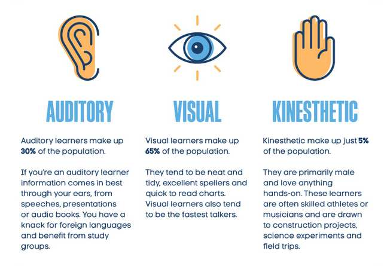
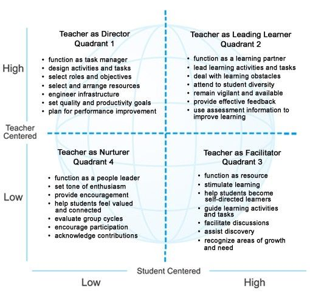

Session Details
- Date: 2nd October 2020
- Topic: Teaching and Learning Methods-II
- Resource Person: Dr. Chalinda K. Beneragama
8. Teaching and Learning Methods-II
Topics covered in this session
- What is Training?
- Types of Training
- Bloom’s Taxonomy (Cognitive Domain)
- Introduction to Teaching/Learning Methods
- Teacher Centered Vs Student Centered
- Cone of learning
- Teaching/Learning Methods – Strengths and Limitations
- Checklist for Effectiveness
- Teaching/Learning Resources
What is Training?
Training can be defined as "the organized procedure by which people learn knowledge and/or skill for a definite purpose". Training refers to the teaching and learning activities carried on for the primary purpose of helping members of an organization acquire and apply the knowledge, skills, abilities, and attitudes needed by a particular job and organization.
Training
Tarinning is;
- Sharpen our skills
- Practicing of doing something better
- The process of learning the skills, attitudes & knowledge.
All categories of academic staff should get training equally. Training like;
- Counselling
- New technology should be given. But the staff has barriers like limited time & heavy workload
Important Training Needs;
- Counselling
- Time management
- Teaching different competencies
- Handling large number of student in a single class
Inclass Activity: List the characteristics of your target population
How to Determine the Needs? (Curriculum)
- Ask participants/students (target group)
- Ask the 'bosses' of the target group
- Ask others who are familiar with the job (the industry people)
- Test participants
- Analyse performance of students
Types of Training
Types of training (timing)
- Pre-service training
- Certificate, Diploma or Degree
- In-service training
- Induction to orientation training
- Foundation training
- Maintenance or refresher training
- On-the-job training
- Career or development training (CPDs)
Types of training (contents)
- Technology or technical training
- Quality training
- Skills training
- Soft skills training
- Professional training and legal training
- Team training
- Managerial training
- Safety training
Three Domains of Learning
- Cognitive – mental skills where brain must be used
- Psychomotor – physical skills such as movement, coordination
- Affective – attitude or will
Fleming’s VAK Model of Learning Styles
Teaching Methods
- Lecture method
- The discussion method
- The demonstration lesson
- Buzz groups
- Brainstorming
- Role plays
Common Problems in Teaching
- Students become overly dependent on the teacher
- Persistent use of first-language
- Student is defiant, rowdy, or distracting of others
- Students "hijack lesson"—The lesson doesn't go where you want it to
- Personalities clash
- Students unclear what to do, or do the wrong thing
- Students are bored, inattentive, or unmotivated
- Strong student dominance
- Students are unprepared
- Tardiness
Teacher-Centered Vs Student-Centered
Teaching / Learning Resources
- Whiteboard
- Handouts
- Specimens
- Models
- Book / Journals / News papers
- Posters & banners
- Flip charts/ Placards
- OHP
- Television / video / Audio can give assignments to submit audio files
- Computer
- PowerPoint
- YouTube
- Interactive white board
Left corner (side) of the whiteboard get more attention. So write the most important things on the Left corner. When you are cleaning the board, do not turn back to students. Because they may get distract. Do not write parts of the things on the board.
Give handouts where students have some work on time (fill the blanks)